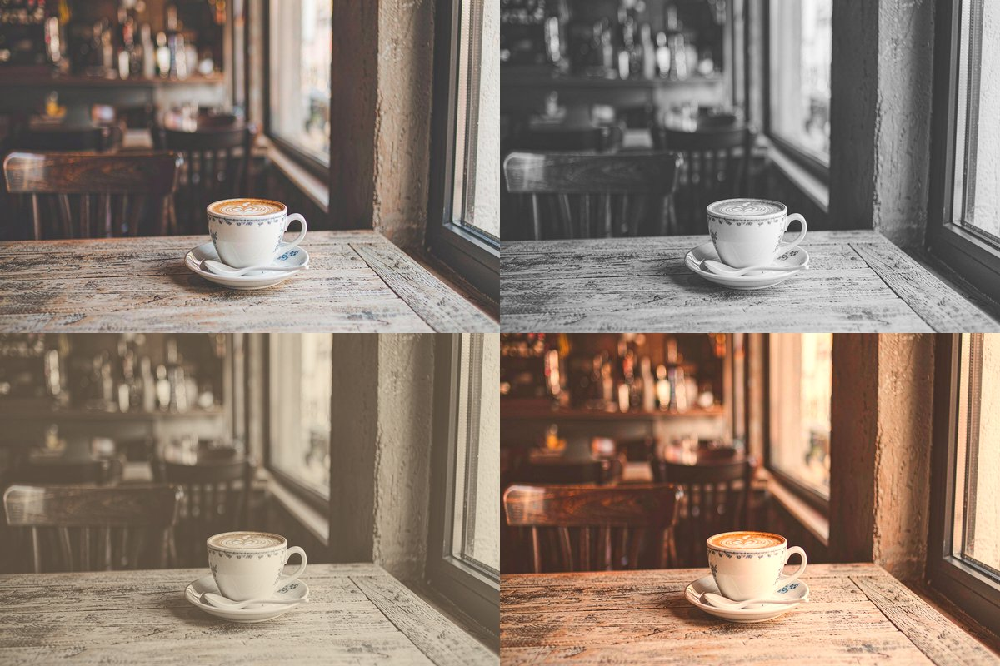

一键滤镜：黑白、复古与电影感
同一张照片，换一个滤镜就是一个完全不同的故事：黑白的分寸感、复古的旧时光、青橙的电影味。滤镜也是让图片「一秒出彩」最便宜的办法。它们都渲染在本地，实时预览，试错不要钱，撤销即时生效——但预设选错，比不选更糟。
一个滤镜其实叠了三件事
多数预设是由三步合成的：一条色调分离曲线（暗部往一个方向偏、亮部往另一个方向偏）、一条对比曲线（抬起或压住中间调），再加一点局部处理——晕影、颗粒、边缘轻模糊。知道自己在看的是哪一步，就能留下喜欢的那部分，去掉毁照片的那部分。
这也解释了为什么一键效果在样图上好看、在自己的图上不对劲：每个预设都是在别人那张参考图上调出来的。一个为正确曝光的日光照片设计的复古效果，套到 ISO 3200 的室内照片上，会把本来就带噪的暗部再压一层泥。预设没变，输入变了。
所以把滤镜当成一个起点，而不是答案。套上之后按顺序问三个问题：色相方向对不对、对比对不对、力度对不对。按这个顺序改，几乎不用再去找另一个预设。

三步套出一个像样的风格
点 【特效】，几个常用方向就在这里：
· 黑白——【特效】→【常见滤镜】→【灰度】，百分比可以停在 80 而不是 100，肤色里能留一点颜色。
· 复古——【特效】→【复古】，或者 【特效】→【常见滤镜】→【棕褐色】 走一个更快的旧胶片调。
· 电影感——【特效】→【Instagram 滤镜】 里的 Lo-fi、Valencia、Clarendon，青橙方向已经调好，省去手动拉曲线。

多数预设默认就过头了。复古、灰度、晕影、颗粒 这四个都有 Level 或百分比滑杆，带实时预览：复古拉到 50 到 70，先看肤色再确认。
Instagram 那组预设没有滑杆，点下去就是全强度。想控制力度就先把图层复制一份（【图层】→【复制】），预设加在副本上，再用图层面板调这一层的不透明度。
最后用 【特效】→【晕影】（Level 0.3 到 0.5，Size 0.5）把视线往中间收，再用 【特效】→【颗粒】（Level 20 到 30）加一点胶片味。这两个默认值都偏重——判断要看 100% 缩放，适应窗口下颗粒像不存在、晕影像满屏都是。
【文件】→【导出】，JPG。发社交平台时长边 1080 到 1280 像素，清晰度和体积最平衡。要在这组图上继续套同一个调子，就留着分层工程——从导出的 JPG 再导一次，压缩会叠加。
什么题材吃什么滤镜
选滤镜不只是审美，有些题材能扛住，有些一碰就散。先按题材定方向，再调力度：
- 人像——黑白，或者极轻的暖调。色偏第一个显在皮肤上，超过一点就不像风格，像失误。
- 街拍与建筑——硬朗的黑白，黑要真黑。纹理和几何撑得住画面，颜色反而在抢。
- 商品——别加任何创意滤镜。买家在比颜色，复古调会把白杯变成米色。该做的是把背景弄干净。
- 食物——亮部偏暖、饱和略提，暗部不动。冷调会让食物看起来不新鲜。
- 风光旅拍——轻的青橙分离，天空空的时候才加晕影。大面积远景上加重颗粒，全尺寸下像文件坏了。
用图层堆出调子，而不是一个预设到底
一个预设 100% 套上去是业余做法；两三次半强度叠加，才是「调过」和「套过滤镜」的区别。顺序几乎对所有题材都适用：
先把底修好。 上风格之前，先用 【图片】→【颜色校正】 或 【图片】→【自动调整颜色】 把曝光和白平衡弄正。绿色偏色的底加任何预设，得到的都是绿色偏色的复古照，没有预设能救。
风格减半。 复制图层，预设加在副本上，把这层不透明度设到 50% 左右。下面守着原始画面，力度任何时候都能改；直接加在单层上，预设就焊死了，只有撤销能回退。
用肉眼做 A/B。 加别的东西之前先比较：用图层面板的眼睛图标开关注释层，两张都按适应窗口看——那才是别人看到的大小。如果只有来回切换才看得出差别，力度刚好；如果原图放在旁边明显不对，说明还没调够。选一个，停手。
- 预设叠加预设。 复古加 Lo-fi 再加暖色叠加，等于三次没有参照的色偏，最后什么都不像。一个风格、一个力度，然后停。
- 在压缩过的图上调色。 给已经压过的 JPG 加一条重曲线，暗部块状会更明显。从原图开始，只导一次。
- 忽略肤色。 脸要放到 100% 看，不是看缩略图。橙手掌和灰嘴唇是最常见的两种露馅。
- 为「电影感」压死暗部。 被对比抹掉的细节回不来。最暗的地方留一点信息。
- 存截图而不是存文件。 把调好的预览截屏再上传，是让一张好调色变成发虚带条纹的最快办法。
常见问题 FAQ
套了复古滤镜之后肤色发橙，怎么办？
复古预设会暖暗部、冷亮部，再抬高分离色调的饱和度。肤色本来就在橙红区间，等于吃了两次，先变橙，而背景看着还行。解法是把复古对话框里的 Level 设到 40 到 60（它带实时预览），或者把预设加在复制的图层上、降低那层的不透明度，再把脸附近的效果擦掉。
滤镜加到什么程度算过头？
如果你能一眼叫出这个滤镜的名字，就过头了。带 Level 或百分比滑杆的，可用区间大约是 40 到 70：图看起来是「调过」，但没人能指出是哪个预设。过了 80，皮肤纹理开始丢，暗部结块，高光压成一片死白。
想要黑白，怎么避免灰成一团？
直接降饱和是把三个通道平均，只靠色相区分的层次全压平了。用【特效】→【常见滤镜】→【灰度】转，然后补层次：如果蓝天和灰屋顶亮度一样，转之前在颜色校正里把天空压暗或把屋顶提亮。对比留到最后小步加，别把刚分出来的层次又压回去。
相关教程推荐
同一张照片分别试黑白、复古、电影感，各调一次力度，再选出你最不后悔的那张。